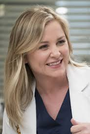
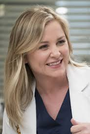
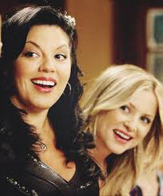

Tudo Sobre arizona robbins
Arizona Robbins é uma personagem fictício na série de televisão da ABC Grey's Anatomy, interpretada por Jessica Capshaw. Ela foi apresentada no show na quinta temporada como uma cirurgiã de comparecimento e a nova chefe de cirurgia pediátrica. Originalmente contratada para aparecer em três episódios, o contrato de Capshaw foi estendido para o restante da quinta temporada, se tornando regular na sexta temporada.
Arizona tem uma "personalidade" peculiar, e um traje concebido para apelar a seus pacientes jovens, incluindo tênis de rodinhas. Ela foi estabelecida como um interesse amoroso para cirurgiã ortopédica Callie Torres, cuja anterior foi namorada de Erica Hahn que foi escrita fora do show no início da temporada devido a uma alegada falta de química entre as duas. A criadora da série Shonda Rhimes estava satisfeita com a química entre Callie e Arizona, citando a adição de Capshaw, como Arizona, como um elemento da época de que era o mais orgulhoso.

A reação da Mídia ao personagem foi bastante positiva. Matt Mitovich da TV Guide a descreveu como um favorito dos fãs, e Chris Monfette da IGN elogiou a adição de Arizona e Owen Hunt (Kevin McKidd), ao longo da temporada. No entanto, Dorothy Snarker para AfterEllen.com admitiu reservas para o acoplamento do Arizona e Callie, devido ao tratamento anterior do show de personagens lésbicas culminando na demissão abrupta de Erica.
Arizona foi ganhando ainda mais destaque ao longo das temporadas, onde acabou se envolvendo amorosamente com Callie Torres (Calzona), o que resultou em um casamento muito bem aceito pela mídia e pelos fã. A família se expande com a chegada da pequena Sofia, filha de Callie, Mark e Arizona.[1] Pouco tempo depois, Arizona acaba traindo Callie, no que resulta o fim do relacionamento.